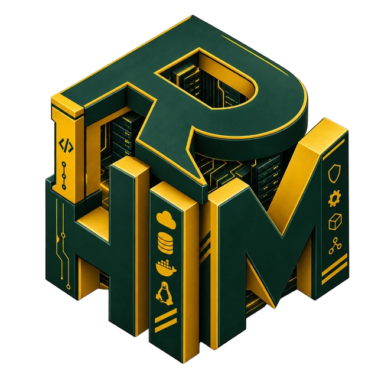

RICARDO HAGUERSOFTWARE & AUTOMATIZACIÓNSANTIAGO, CHILE / PORTAFOLIO INTERACTIVO
Soy Ricardo Haguer. Conecto aplicaciones, información y dispositivos para resolver problemas concretos.
W A S D Mover SHIFT Sprint ESPACIO Pase
ENTER Abrir zona · Controles táctiles en móvil